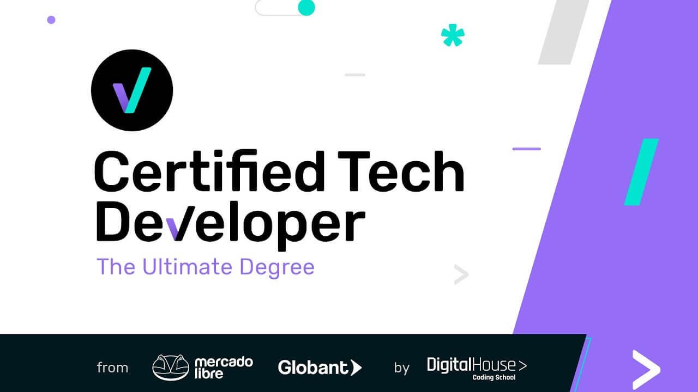
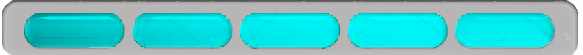

Bienvenid@ a mi CV interactivo: todo es clickeable. Si estás en el celular, hace click en cada recuadro para tener un poco más de información interesante. Si estás en la compu, solo pasá el ratón ;)
Hacía el final hay un lindo juego para los reclutadores IT (¡con premio!), y también un bonus track que todos van a disfrutar
<< Sobre mí >>
Si hay algo que me define, es que AMO CRECER
Todo el tiempo busco desarrollar nuevas habilidades e implementar los conocimientos y experiencias previas.
Me destaqué en politología, ingeniería, auditoría, y hoy en programación. Todas estas áreas tienen algo en común: pensamiento analítico, resolución de problemas y liderazgo.
No le temo a la responsabilidad ni a tomar decisiones. Trabajo excelentemente en equipo. Y siempre busco enfrentar nuevos desafíos.
En las próximas secciones vas a ver un resumen de mi desarrollo profesional. Pero recordá que siempre estoy en constante movimiento para aprender.
<< Tecnologías y herramientas >>
Front-End

HTML

CSS

SASS

Javascript
Back-End

JAVA
Javascript

MySQL
Testing

Postman

Selenium
Otros
Node JS

IntelliJ IDEA

Visual Studio Code

Salesforce: Platform, Tableau, CPQ

ERP Tango
Manejo avanzado de hojas de cálculo: tablas dinámica y macros en Calc, Google Sheets y Excel
<< Conocimientos y certificaciones >>
Actualmente
Estoy a mitad de la carrera de 2 años y medio para desarrollarme como Full-Stack Developer. Becada por Mercado Libre y Globant
Idiomas
Español
Por si hay duda: español latino nativo ;)
Inglés
Cursando nivel 7 (First Certicate) en el CUI
Alemán
Sí: sé hablar en alemán. Es que viví en Deutchland medio año, y me certifiqué en nivel C1 en la Erfurt Universität
Cursos
Curso 1: Robotic Operating Model
Curso 2: Introduction to Automation Lifecycle Management
Auditor interno trinorma (ISO 9001, 14001 y 45001)
CQI/IRCA: QMS ISO 9001:2015 Lead Auditor
Curso 1: Liderazgo
Curso 2: Pérdidas dentro de los procesos productivos y herramientas para mejorar la productividad
Metodologías ágiles y herramientas: Scrum, Design Thinking, Kanban
Universidades
Ingeniería Industrial inconcluso: abandoné por incompatibilidad de horarios con la carrera de Digital House
Politikswissenschaft: viví 6 meses en Alemania, cursando 7 materias en total. ¡Hermosísima experiencia!
Licenciatura en Ciencia Política y Gobierno completo: 4 años de cursada + tesis aprobada con excelente nota (9)
Dato importante: estaba becada por mis notas
<< Experiencia >>
Analista funcional Sr y PM - Abril 2021/Actual
Relevamiento de procesos y necesidades. Diseño funcional del RPA. Manejo de proyectos y su equipo
Industria IT
Analisis y diseño
Liderazgo
Trato con clientes
Responsable Sistema de Gestión de Calidad - Julio 2019/Marzo 2021
Hacía cumplir las normas ISO, implementaba mejoras de procesos, resolvía la comunicación entre la parte técnica y los clientes, generaba reportes
Responsable Recursos Humanos - Noviembre 2017/Marzo 2021
Trabajaba todo lo que tenía que ver con la comunicación con lo empleados, incluidas las notas disciplinarias y suspensiones. Desarrollé proceso de liquidación efectivo y rápido.
Jefa de producción - Noviembre 2017/Marzo 2019
Me encargaba de organizar la producción y dirigir a los operarios, logrando en tres meses, reducir el atraso productivo. ¿Por qué dejé el puesto? Porque me tomé mi licencia por maternidad y cuando volví, estuve unos meses part-time
Analisis y diseño
Liderazgo
Trato con clientes
Dueña de emprendimiento propio - Marzo 2013/Diciembre 2016
A los 23 años abrí una remiseria en Palermmo (Capital Federal) y gestioné el negocio por 3 años coordinando con choferes y clientes empresariales. La cerré por cuestiones personales
Analisis y diseño
Liderazgo
Trato con clientes
Líder de sector - Julio 2010/Mayo 2013
Básicamente dirigía un pequeño grupo de personas para que inventariaran correctamente
Auditora interna de stock - Febrero 2010/Julio 2010
Tan simple como inventariar correctamente la mercadiría existente
Liderazgo
<< ¡Juguemos! >>
¡Hola recruiter! ¿Te interesó mi perfil? Juguemos y veamos si me interesa tu propuesta. Si tus respuestas son correctas, ¡ganarás un premio!
CV listo para descargar<< Bonus Track >>
La verdadera felicidad viene del espacio que te rodea.
Les presento a una parte de mi familia. Todos rescatados de la calle
Mat:
Lo encontré al borde de la muerte, con moquillo, cuando aun no tenía ni un año
Sarni:
Lo dejaron en una caja en la puerta de casa, con 3 meses de vida y todo pelado por la sarna
Gatu:
Es el que más suerte tuvo en la calle: solo estaba un poco flaco. Ama tomar sol en la vereda y que los vecinos lo saluden